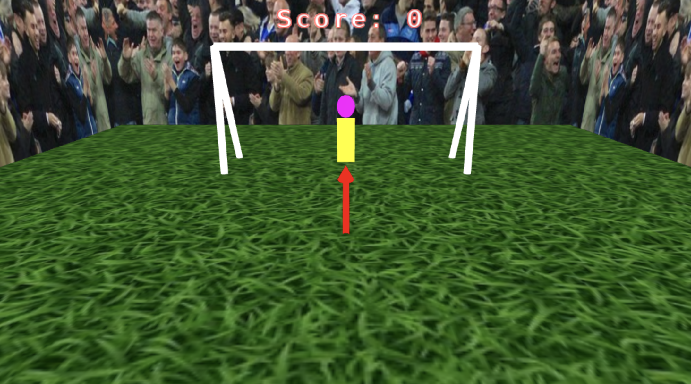
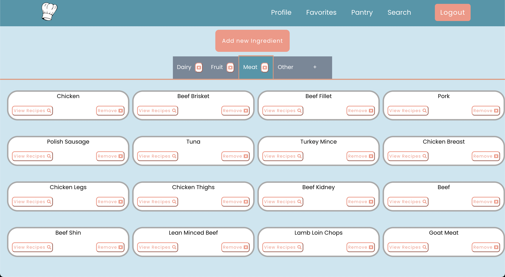
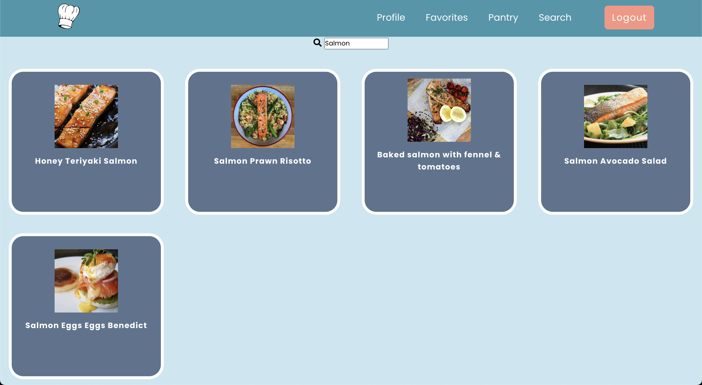
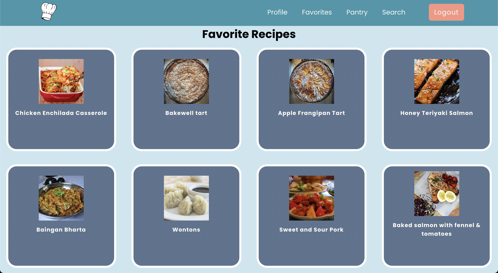
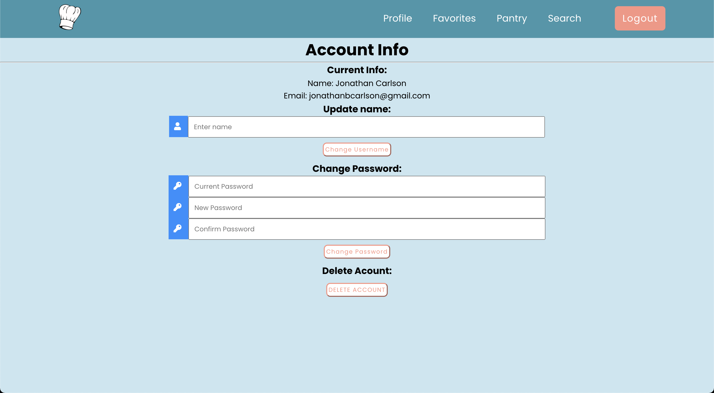
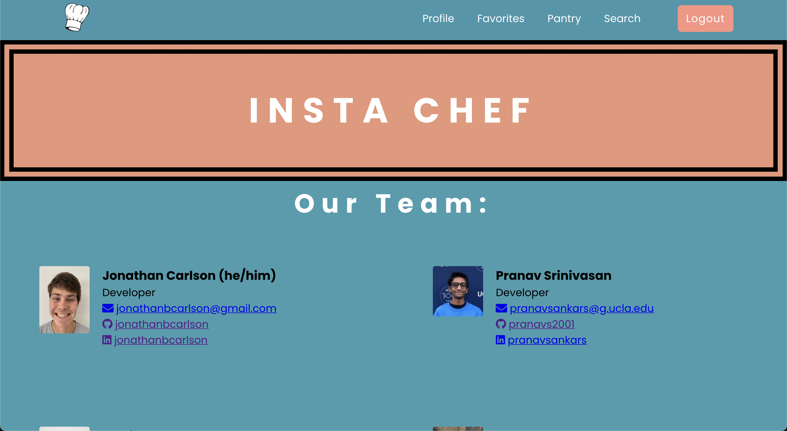
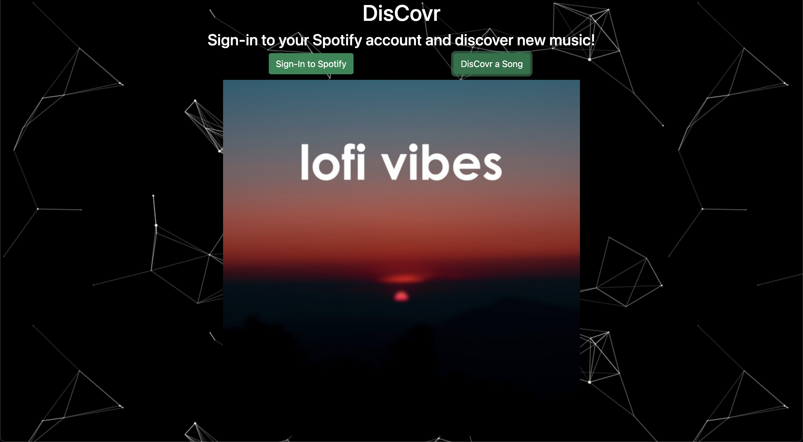

For my Computer Graphics (CS 174A) project, my team and I were inspired by the 2022 World Cup.
So we created Penalty Shootout, a game where you shoot penalties against your friends, an AI, or to gain practice.
Source code on Github
Watch a presentation explaining how my teammates and I made it.
Here's a screenshot of what Penalty Shootout looks like:
Insta-Chef is a recipe-finding website that leverages ingredients you have in your kitchen!
I worked with Firebase Realtime Database and React to create a user-specific Pantry where the user can search for recipes based on the ingredient.
I also worked on being able to look at recipes with a selected ingredient (the "View Recipes" button).
Check out Insta-Chef's source code here.
Here's some screenshots of what Insta-Chef looks like:
The Pantry tab
The Search tab
The Favorites tab
The Profile tab
The Homepage tab
DisCovr plays a random song from Spotify! I worked with a friend, Pranav Srinivasan to create Discovr. It uses the SpotifyPlaybackSDK to play the song and the Spotify Web API to select a random song. Now go DisCovr!
Check out DisCover's source code here.
Here's a screenshot of what DisCover looks like:
